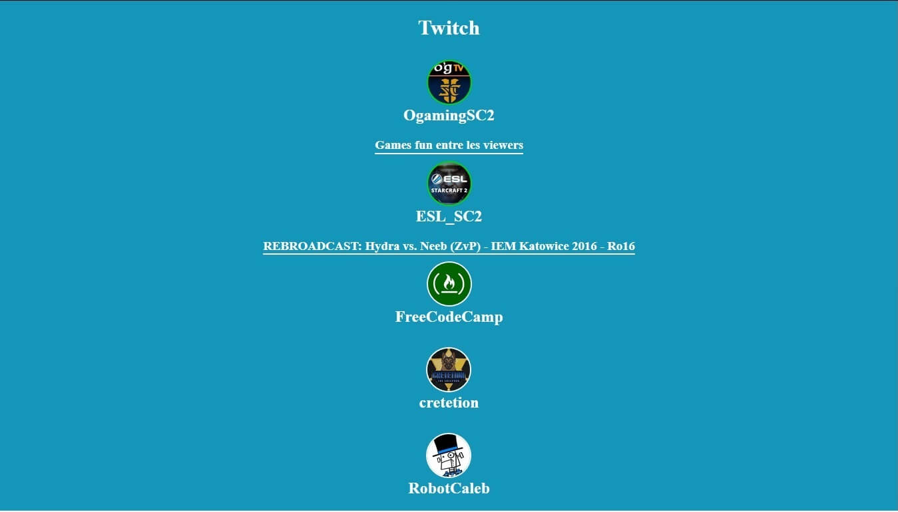

Projects

Twitchmore_vert
Use TwitchTv JSON APIclose
Free Code Camp project
User Story: I can see whether Free Code Camp is currently streaming on Twitch.tv.
User Story: I can click the status output and be sent directly to the Free Code Camp's Twitch.tv channel.
User Story: if a Twitch user is currently streaming, I can see additional details about what they are streaming.